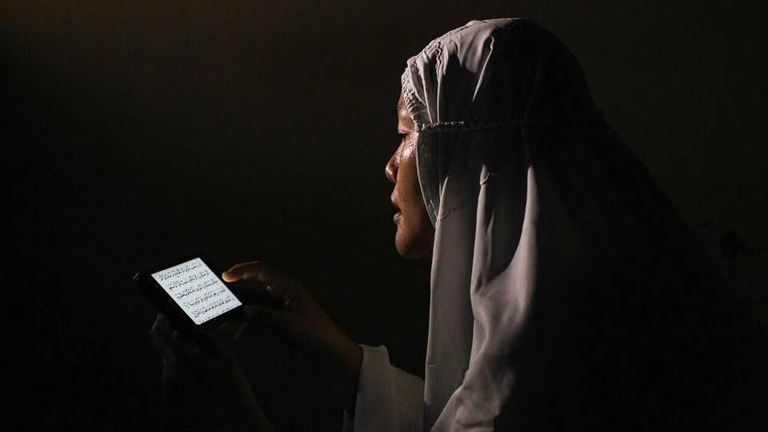
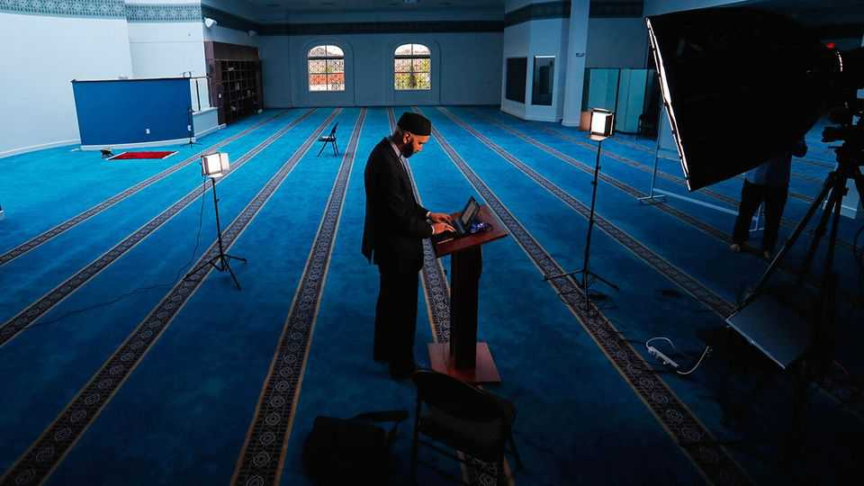

The digital world is making Islam more diverse
Muslims are young, online and playing by their own rules

Nov 5th 2026
IT began BY accident. In 2018 Omar Suleiman, a soft-spoken Texan imam, realised that a scammer was impersonating him on Instagram to solicit donations. He decided to create a genuine account. A community of followers began to grow, especially during the pandemic, when he started live-streaming on YouTube every night, talking about how Islam can help with things like uncertainty and grief.
Mr Suleiman now has more than 3m followers on Instagram and a TikTok account with 22.2m likes. His followers hail from all over the world. Many watch him because their local imams do not really grapple with the issues they care about, he thinks. Some followers tell him his teachings have changed their lives.
The world’s 2bn-odd Muslims are younger, on average, than people of other religions: in 2020 the Pew Research Centre, an American public-policy institute, found that the median age for the faith was 24, versus 33 for non-Muslims. They are also very much online. An upcoming survey from Arab Barometer, a research firm, found that 60% of 18- to 29-year-old Muslims in the Middle East are both “heavy internet users” and “highly engaged” on social media. Around 30% of British Muslims use social media a “great deal” for religious information, according to a recent study by the Digital British Islam project.
What these young, Muslim digital natives find online is shaping the future of their religion. And what they are discovering is a cornucopia of doctrines and outlooks that is far more varied than what they might encounter at their local mosque. Although religious authority in Islam typically derives from scholarly expertise, many of the biggest online influencers are simply opinionated laypeople eager to vent. They espouse a dizzying array of theologies, from the conventional to the extreme. They are creating a more heterodox faith.
Muslims used to learn about religion primarily at their mosque. Cassette sermons became popular in the 1970s and TV imams followed in the 1990s. These democratised access to religious teaching to some extent, but the internet has hastened the shift. Online, “People can explore who they are,” says Renasha Khan of King’s College London, because they can seek information in private, without the mediation of local religious leaders. In particular, they can pick and choose among textual interpretations, rather than subscribing wholesale to a single school of thought.
Nadya Lim, a 35-year-old from Singapore, uses Muslim Pro, an app that has been downloaded 190m times, to check the timing of the five prayers devout Muslims perform each day and the direction of Mecca, towards which they are supposed to pray. She also regularly consults Google for answers to such questions as where the nearest mosque is or how to apply Islam’s injunction against praying while menstruating if her period is late.
The internet has not only allowed Muslims like Ms Lim to take greater control of their own faith, but has also exposed them to a wider range of views. Being a Muslim feminist, at least in public, was once very rare. But Muslim feminist influencers are building followings online, even if they are not yet mainstream. In Nigeria, Wardah Abbas, a Muslim writer, has gained popularity by challenging more conservative views on gender, which she argues are rooted more in culture than in Islam itself. “We don’t care what you have to say about this religion. We want to do our own personal research,” she says. Amina Wadud, an American theologian nicknamed “The Lady Imam”, describes herself as an “ally” to gay and transgender Muslims.
Some lifestyle influencers encourage Muslims to break the mould in more subtle ways. “Ayahsvoice”, a Briton with more than 14m likes on TikTok, describes herself as a “scholar of pink cherry Islam” and says that her account is for Muslim women who “struggle to fit in the religion”. Her make-up tutorials are generally light on theology. But she openly rejects Hadith, the collected sayings and doings of the Prophet Muhammad—a fundamental departure from orthodox Islam. She argues that the misogyny espoused by some male Muslim influencers stems more from the Hadith than from the Koran.
Muslim lifestyle influencers are also popular in Indonesia. Many promote or sell their own modest clothing on Instagram. Ummu Alila, one such influencer, who has around 500,000 followers on the app, offers head coverings and denim dresses designed to comply with Islamic principles. Ummu Alila founded the firm with her husband, Felix Siauw, a preacher who built a big following online in the mid-2010s. He was a member of Hizbut Tahrir Indonesia, which agitated for a transnational Islamic caliphate (it was banned in 2017). Now he and she opine online together about everything from touring Istanbul to infidelity.
Social media also offer believers perspectives from parts of the Islamic world far from their own. Mr Suleiman, the Texan imam, has plenty of followers in the Middle East. Ms Lim says in the past “people received only one side”, but she now gets ideas from influencers such as Mufti Menk, a popular scholar from Zimbabwe.
There is, inevitably, plenty of incendiary content, too. Muhammad Hijab, who is associated with a group of young British Muslim influencers nicknamed the “Dawah Bros”, has 1.3m subscribers on YouTube. He likes to debate atheists and non-Muslim religious leaders, producing pugnacious videos with titles like “Anti-Islam preacher humiliated”.
Some commentators talk of a Muslim “manosphere”, which blends Islamic theology with macho chauvinism. When Andrew Tate, an influencer wanted in Britain on charges of rape and human trafficking, converted to Islam in 2022, Mr Hijab interviewed him to welcome him to the faith. In 2022 Mr Hijab travelled to the city of Leicester, where there had been clashes between Hindus and Muslims. He told crowds of Muslim men, many of them masked, that Hindu nationalists were “pathetic, weak and cowardly”.
It is not clear whether online influencers have steered Muslims in a more liberal or conservative direction overall. But they have fostered a sense of digital community. Ishtiaque Ahmed of the University of Toronto argues that Muslims’ access to a wide range of information has spurred the emergence of “a spirit of global Islam” online. Those who are opposed to Israel’s war in Gaza, for example, have a place to unite and discuss their cause. The diaspora from Muslim-majority countries can also access teachings from back home more easily, says Ali Riaz of Illinois State University.
Some mainstream imams denounce the more novel teachings spreading online. “I have been excommunicated a number of times and I’ve been accused of being a sell-out, a heretic,” says Ms Abbas, the Nigerian feminist. But most forms of Islam have always been decentralised, without an institutional hierarchy or a supreme leader like the pope. Years of study at well-known institutions, such as Al Azhar in Cairo, do not guarantee digital prominence. In the age of the internet, notes Ibrahim Abusharif of Northwestern University, “Authentic scholars and pathetic pretenders can compete for audiences.”

The profusion of interpretations of Islam circulating online makes some governments wary, too. In 2024 Manahel al-Otaibi, a popular Muslim online fitness instructor, was sentenced to 11 years in prison in Saudi Arabia for sharing pictures of herself in immodest clothing and for supporting an end to Islamically inspired laws that allow men to control the movements of their wives and some female relatives. In 2017 Salman al-Ouda, a prominent Saudi cleric with more than 9m followers on X, was arrested just days after he tweeted a prayer of reconciliation between Saudi Arabia and Qatar, in apparent opposition to the Saudi government’s blockade of Qatar.
In democracies the popularity of Islamic influencers has prompted a different sort of response from politicians. Bernie Sanders, an American senator, got Mr Suleiman to speak at a rally when he ran for president in 2020. In the run-up to Indonesia’s presidential election in 2024, politicians sought the support of popular Muslim influencers such as Haikal Hassan, who has about 2m Instagram followers. Such figures are also prominent in Bangladeshi politics. After Tarique Rahman became prime minister earlier this year he sought the advice of Sheikh Ahmadullah, a preacher with 3.5m YouTube subscribers, about amending laws on donations to charity—a pillar of Islam.
The internet is not everything. In many Muslim-majority countries beliefs are still primarily shaped by local scholars. Nurudeen Lemu, one such scholar, says that much of what is debated online is not very useful in Nigeria. “Religion is not copy paste. An online response backed by a Pakistani, a Saudi, an American, an Australian, to a Nigerian Muslim is contextless,” he says, pointing to differences in everything from eating habits to clothing.
Mr Lemu even plays down the risk of extremists exploiting the digital world to foster Islamist terrorism. In surveys he has conducted of detained jihadists in northern Nigeria, he found that “less than 1% of recruitment was online” over the past decade. “They were using cassette tapes! There is a gentle rise as internet access has gone further and batteries last longer, but it usually requires a friend.”
Moreover, online preachers can only supplement local ones, rather than supplant them, since taking part in communal services in person is important in Islam. Most Muslims consider attendance at Friday prayers compulsory for able-bodied men, for instance. About 40% of American Muslims attend services once a week. Bouziane Zaid of the University of Sharjah has found that Middle Eastern youths still tend to turn to a local imam first for serious advice on personal matters. Local imams and congregations will always be influential—but they are now just one of many forces shaping young Muslims’ beliefs. ■